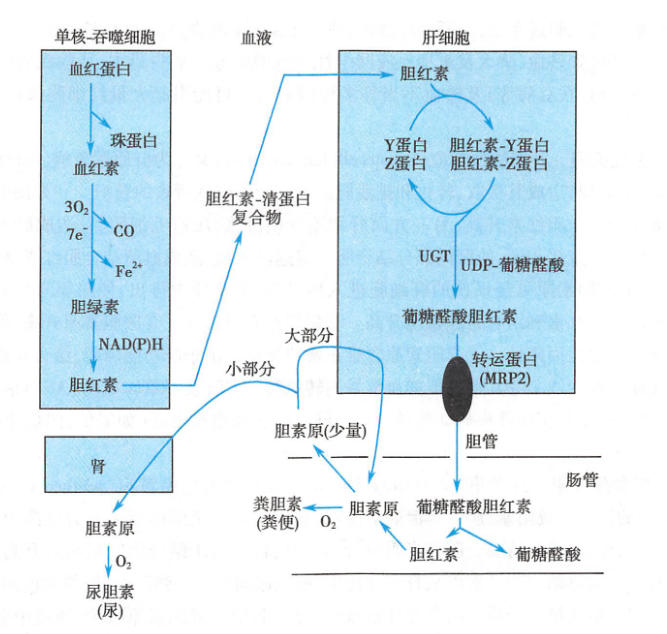
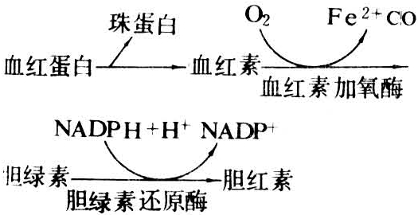
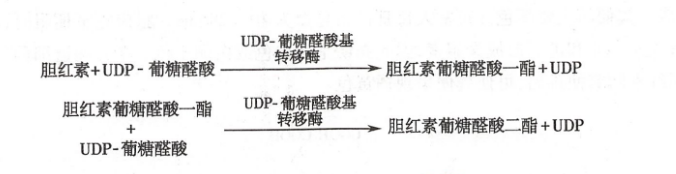
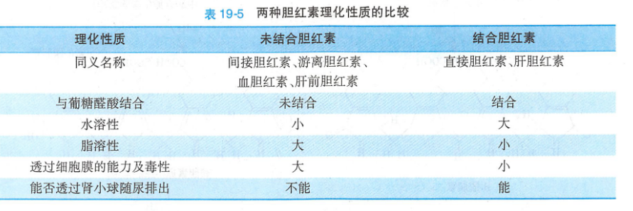

Abstract：
胆色素(bile pigment)是体内铁卟啉类化合物的主要分解代谢产物,包括胆绿素(biliverdin)、胆红素(bilirubin)、胆素原(bilinogen)和胆素(bilin)。这些化合物主要随胆汁排出体外,其中胆红素居于胆色素代谢的中心,是人体胆汁中的主要色素,呈橙黄色。

胆红素的来源
胆红素是铁卟（bu）啉类化合物的降解产物，体内铁卟啉类化合物包括血红蛋白、肌红蛋白、细胞色素、过氧化氢酶和过氧化物酶等。正常人每天可生成250~350mg胆红素,其中约80%以上来自衰老红细胞破坏所释放的血红蛋白的分解。小部分胆红素来自造血过程中红细胞的过早破坏(无效红细胞生成),还有少量胆红素来自其他各种含血红素蛋白如细胞色素 P450。肌红蛋白由于更新率低,所占比例很小。

血红素（环状四吡咯环结构）在单核吞噬系统细胞微粒体的血红素加氧酶（heme oxygenase,HO）催化，在至少3分子氧和3分子NADPH的存在下，生成水溶性的胆绿素（线性四吡咯结构），释放的Fe2+氧化为Fe3+进入铁代谢池。
胆绿素进一步在胞质活性很强的胆绿素还原酶(biliverdin reductase)催化下,由NADPH供氢,还原生成胆红素。
由于胆红素分子内氢键的作用，胆红素具有疏水亲脂的性质，极易自由透过细胞膜进入血液。
胆红素的转运
胆红素在单核吞噬系统细胞生成以后释放入血。在血浆中主要以胆红素-清蛋白复合体形式存在和运输。
- 优势
- 增加了胆红素的水溶性,提高了血浆对胆红素的运输能力
- 限制了它自由通透各种细胞膜,避免了其对组织细胞造成的毒性作用
- 潜力
- 正常人血浆胆红素含量为3.4~17.1μmol/L(2~10mg/L),而每100ml血浆清蛋白可结合25mg胆红素,故在正常情况下血浆清蛋白结合胆红素的潜力很大,不与清蛋白结合的胆红素甚微。
- 限制
- 胆红素与清蛋白的结合是非特异性、非共价可逆性的。若清蛋白含量明显降低、结合部位被其他物质占据或降低胆红素对结合部位的亲和力,均可促使胆红素从血浆向组织细胞转移。
某些有机阴离子(如磺胺药、水杨酸、胆汁酸、脂肪酸等)可与胆红素竞争性地结合清蛋白,使胆红素游离。过多的游离胆红素因系脂溶性易穿透细胞膜进入细胞,尤其是富含脂质的脑部基底核的神经细胞,干扰脑的正常功能,称为胆红素脑病(bilinubin encephalopathy)或核黄疽(kemnicterus)。有黄疸倾向的病人或新生儿生理性黄疸期,应慎用上述药物。因此,血浆清蛋白与胆红素的结合仅起到暂时性的解毒作用,其根本性的解毒依赖肝与葡糖醛酸结合的生物转化作用。把这种未经肝结合转化的,在血浆中与清蛋白结合运输的胆红素称为未结合胆红素(unconjugated bilirubin)或血胆红素或游离胆红素。未结合胆红素因分子内氢键存在,不能直接与重氮试剂反应,只有在加入乙醇或尿素等破坏氢键后才能与重氮试剂反应,生成紫红色偶氮化合物,故未结合胆红素又称为间接反应胆红素或间接胆红素(indirect bilirubin)。
胆红素的结合
血中的胆红素以胆红素-清蛋白复合体的形式运输到肝后,在被肝细胞摄取前先与清蛋白分离，然后迅速被肝细胞摄取。胆红素可以自由双向通透肝血窦肝细胞膜表面而进入肝细胞。所以,肝细胞对胆红素的摄取量取决于肝细胞对胆红素的进一步处理能力。
胆红素进入肝细胞后,在细胞质中主要与细胞质Y蛋白和Z蛋白两种配体蛋白(1igandin)相结合,其中,以Y蛋白为主。配体蛋白是胆红素在肝细胞质的主要载体,系谷胱甘肽S-转移酶(GST)家族成员,含量丰富,占肝细胞质总蛋白质的3%~4%,对胆红素有高亲和力。配体蛋白可与胆红素1:1结合,以胆红素-Y蛋白或胆红素-Z蛋白形式将胆红素携带至肝细胞滑面内质网。
在滑面内质网UDP-葡糖醛酸基转移酶(UDP-glucuronosyltransferase,UGT)的催化下,由UDPCA提供葡糖醛酸基,生成葡糖醛酸胆红素(bilirubin glu-curonide)。由于胆红素分子中含有2个羧基,每分子胆红素可至多结合2分子葡糖醛酸。结果主要生成胆红素葡糖醛酸二酯和少量胆红素葡糖醛酸一酯,两者均可被分泌人胆汁。此外,尚有少量胆红素与硫酸结合生成硫酸酯。胆红素与葡糖醛酸的结合是肝脏对有毒性胆红素一种根本性的生物转化解毒方式。把这些在肝脏与葡糖醛酸结合转化的胆红素称为结合胆红素(conjugated bilirubin)或肝胆红素。与葡糖醛酸结合的胆红素因分子内不再有氢键,分子中间的亚甲桥不在深埋于分子内部,可以迅速、直接与重氨试剂发生反应,故结合胆红素又称为直接反应胆红素或直接胆红素(directbilirubin)。


结合胆红素水溶性强,被肝细胞分泌进入胆管系统,随胆汁排入小肠。此被认为是肝脏代谢胆红素的限速步骤。
肝细胞向胆小管分泌结合胆红素是一个逆浓度梯度的主动转运过程,定位于肝细胞膜胆小管域的多耐药相关蛋白2(multidrugresistance-like protein，2MRP2)是肝细胞向胆小管分泌结合胆红案的转运蛋白质。胆红素排泄一旦发生障碍,结合胆红素就可返流入血。对UDP-葡糖醛酸基转移酶具有诱导作用的苯巴比妥等药物对结合胆红素从肝细胞到胆汁的分泌也同样具有诱导作用,可见胆红素的结合转化与分泌构成相互协调的功能体系。
血浆中的胆红素通过肝细胞膜的自由扩散、肝细胞质内配体蛋白的运转、内质网的葡糖醛酸基转移酶的催化和肝细胞膜的主动分泌等联合作用,不断地被肝细胞摄取、结合转化与排泄,从而不断地得以清除。
胆红素的排泄
胆素原是结合胆红素经肠菌作用的产物。经肝细胞转化生成的葡糖醛酸胆红素随胆汁进入肠道,在回肠下段和结肠的肠菌作用下,脱去葡糖醛酸基,并被还原生成d-尿胆素原(d-urobilinogen)和中胆素原( mesobilirubinogen,i-urobilinogen)后者又可进一步还原生成粪胆素原(stercobilinogen,l-urobilinogen),这些物质统称为胆素原。大部分胆素原随粪便排出体外,在肠道下段,这些无色的胆素原接触空气后分别被氧化为相应的d-尿胆素(d-urobilin)、i-尿胆素( i-urobilin)和粪胆素(stereobilin,l-urobilin),三者合称胆素。胆素呈黄褐色,成为粪便的主要颜色。正常人每日排出总量为40280mg。胆道完全梗阻时,胆红素不能排入肠道形成胆素原和进而形成粪胆素,因此粪便呈灰白色或白陶土色。婴儿肠道细菌稀少,未被细菌作用的胆红素随粪便排出,可使粪便呈现橘黄色。20%可被肠黏膜细胞重吸收,经门静脉入肝,其中大部分(约90%)以原形随胆汁排人肠腔,形成胆素原的肠肝循环(enterohepatic urobilinogen cycle)。只有小部分(10%)胆素原可以进人体循环经肾小球滤出随尿排出,称为尿胆素原。正常人每日随尿排出尿胆素原约0.5~4.0mg。尿胆素原与空气接触后被氧化成尿胆素,成为尿的主要色素。临床上将尿胆素原、尿胆素及尿胆红素合称为尿三胆,是黄疸类型鉴别诊断的常用指标。正常人尿中检测不到尿胆红素。
少量胆素原可被肠黏膜重吸收，进入胆素原的肠肝循环肠道中生成的胆素有原10%
黄疸
参考文章：